2022 Higher Chemistry - Paper 2 marking instructions
Source: Scottish Qualifications Authority (SQA) / Qualifications Scotland. This is a StemInteract HTML companion, not an official HTML edition. Selectable text is supplied alongside original page images. Use the images or original PDF for equations, powers, fractions, vector notation, tables and diagrams; text extraction cannot fully preserve mathematical layout.
Jump to a question
PDF page 1
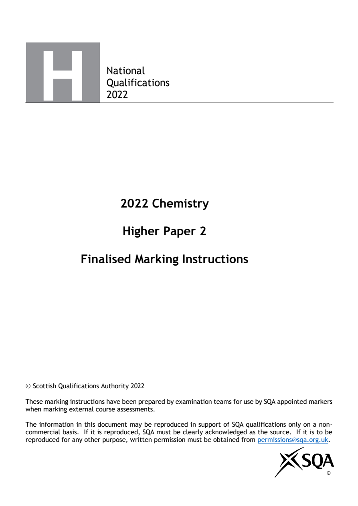
Selectable page text
National
Qualifications
2022
2022 Chemistry
Higher Paper 2
Finalised Marking Instructions
© Scottish Qualifications Authority 2022
These marking instructions have been prepared by examination teams for use by SQA appointed markers
when marking external course assessments.
The information in this document may be reproduced in support of SQA qualifications only on a non-
commercial basis. If it is reproduced, SQA must be clearly acknowledged as the source. If it is to be
reproduced for any other purpose, written permission must be obtained from permissions@sqa.org.uk.
©PDF page 2
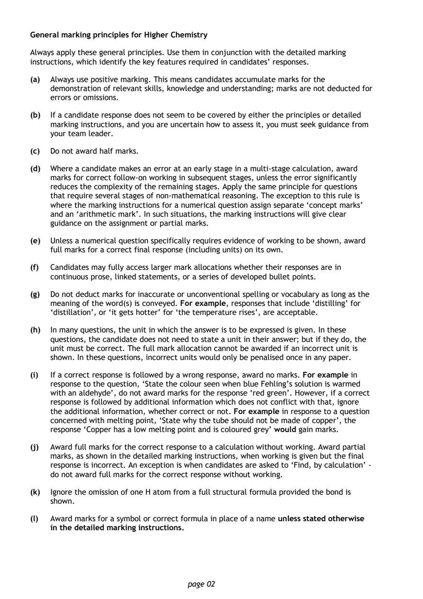
Selectable page text
General marking principles for Higher Chemistry
Always apply these general principles. Use them in conjunction with the detailed marking
instructions, which identify the key features required in candidates’ responses.
(a) Always use positive marking. This means candidates accumulate marks for the
demonstration of relevant skills, knowledge and understanding; marks are not deducted for
errors or omissions.
(b) If a candidate response does not seem to be covered by either the principles or detailed
marking instructions, and you are uncertain how to assess it, you must seek guidance from
your team leader.
(c) Do not award half marks.
(d) Where a candidate makes an error at an early stage in a multi-stage calculation, award
marks for correct follow-on working in subsequent stages, unless the error significantly
reduces the complexity of the remaining stages. Apply the same principle for questions
that require several stages of non-mathematical reasoning. The exception to this rule is
where the marking instructions for a numerical question assign separate ‘concept marks’
and an ‘arithmetic mark’. In such situations, the marking instructions will give clear
guidance on the assignment or partial marks.
(e) Unless a numerical question specifically requires evidence of working to be shown, award
full marks for a correct final response (including units) on its own.
(f) Candidates may fully access larger mark allocations whether their responses are in
continuous prose, linked statements, or a series of developed bullet points.
(g) Do not deduct marks for inaccurate or unconventional spelling or vocabulary as long as the
meaning of the word(s) is conveyed. For example, responses that include ‘distilling’ for
‘distillation’, or ‘it gets hotter’ for ‘the temperature rises’, are acceptable.
(h) In many questions, the unit in which the answer is to be expressed is given. In these
questions, the candidate does not need to state a unit in their answer; but if they do, the
unit must be correct. The full mark allocation cannot be awarded if an incorrect unit is
shown. In these questions, incorrect units would only be penalised once in any paper.
(i) If a correct response is followed by a wrong response, award no marks. For example in
response to the question, ‘State the colour seen when blue Fehling’s solution is warmed
with an aldehyde’, do not award marks for the response ‘red green’. However, if a correct
response is followed by additional information which does not conflict with that, ignore
the additional information, whether correct or not. For example in response to a question
concerned with melting point, ‘State why the tube should not be made of copper’, the
response ‘Copper has a low melting point and is coloured grey’ would gain marks.
(j) Award full marks for the correct response to a calculation without working. Award partial
marks, as shown in the detailed marking instructions, when working is given but the final
response is incorrect. An exception is when candidates are asked to ‘Find, by calculation’ -
do not award full marks for the correct response without working.
(k) Ignore the omission of one H atom from a full structural formula provided the bond is
shown.
(l) Award marks for a symbol or correct formula in place of a name unless stated otherwise
in the detailed marking instructions.
page 02PDF page 3
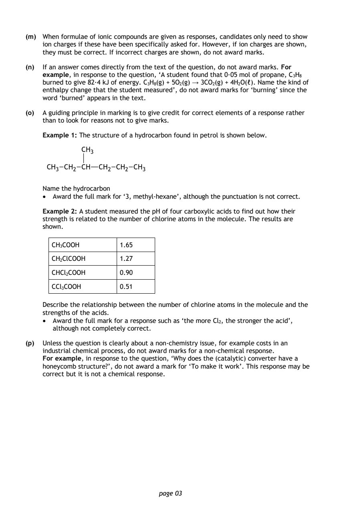
Selectable page text
(m) When formulae of ionic compounds are given as responses, candidates only need to show
ion charges if these have been specifically asked for. However, if ion charges are shown,
they must be correct. If incorrect charges are shown, do not award marks.
(n) If an answer comes directly from the text of the question, do not award marks. For
example, in response to the question, ‘A student found that 0·05 mol of propane, C₃H₈
burned to give 82·4 kJ of energy. C₃H₈(g) + 5O₂(g) → 3CO₂(g) + 4H₂O(ℓ). Name the kind of
enthalpy change that the student measured’, do not award marks for ‘burning’ since the
word ‘burned’ appears in the text.
(o) A guiding principle in marking is to give credit for correct elements of a response rather
than to look for reasons not to give marks.
Example 1: The structure of a hydrocarbon found in petrol is shown below.
Name the hydrocarbon
• Award the full mark for ‘3, methyl-hexane’, although the punctuation is not correct.
Example 2: A student measured the pH of four carboxylic acids to find out how their
strength is related to the number of chlorine atoms in the molecule. The results are
shown.
CH₃COOH 1.65
CH₂ClCOOH 1.27
CHCl₂COOH 0.90
CCl₃COOH 0.51
Describe the relationship between the number of chlorine atoms in the molecule and the
strengths of the acids.
• Award the full mark for a response such as ‘the more Cl₂, the stronger the acid’,
although not completely correct.
(p) Unless the question is clearly about a non-chemistry issue, for example costs in an
industrial chemical process, do not award marks for a non-chemical response.
For example, in response to the question, ‘Why does the (catalytic) converter have a
honeycomb structure?’, do not award a mark for ‘To make it work’. This response may be
correct but it is not a chemical response.
page 03PDF page 4
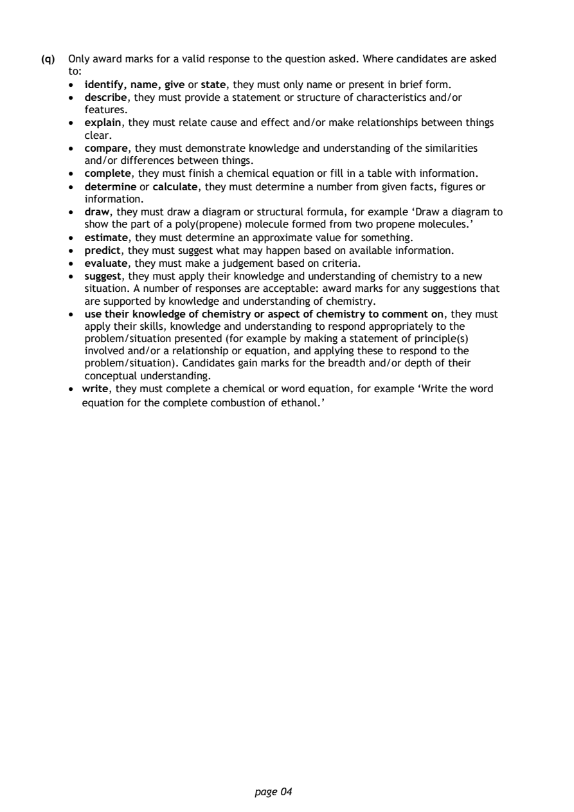
Selectable page text
(q) Only award marks for a valid response to the question asked. Where candidates are asked
to:
• identify, name, give or state, they must only name or present in brief form.
• describe, they must provide a statement or structure of characteristics and/or
features.
• explain, they must relate cause and effect and/or make relationships between things
clear.
• compare, they must demonstrate knowledge and understanding of the similarities
and/or differences between things.
• complete, they must finish a chemical equation or fill in a table with information.
• determine or calculate, they must determine a number from given facts, figures or
information.
• draw, they must draw a diagram or structural formula, for example ‘Draw a diagram to
show the part of a poly(propene) molecule formed from two propene molecules.’
• estimate, they must determine an approximate value for something.
• predict, they must suggest what may happen based on available information.
• evaluate, they must make a judgement based on criteria.
• suggest, they must apply their knowledge and understanding of chemistry to a new
situation. A number of responses are acceptable: award marks for any suggestions that
are supported by knowledge and understanding of chemistry.
• use their knowledge of chemistry or aspect of chemistry to comment on, they must
apply their skills, knowledge and understanding to respond appropriately to the
problem/situation presented (for example by making a statement of principle(s)
involved and/or a relationship or equation, and applying these to respond to the
problem/situation). Candidates gain marks for the breadth and/or depth of their
conceptual understanding.
• write, they must complete a chemical or word equation, for example ‘Write the word
equation for the complete combustion of ethanol.’
page 04PDF page 5
Paper 2, Question 1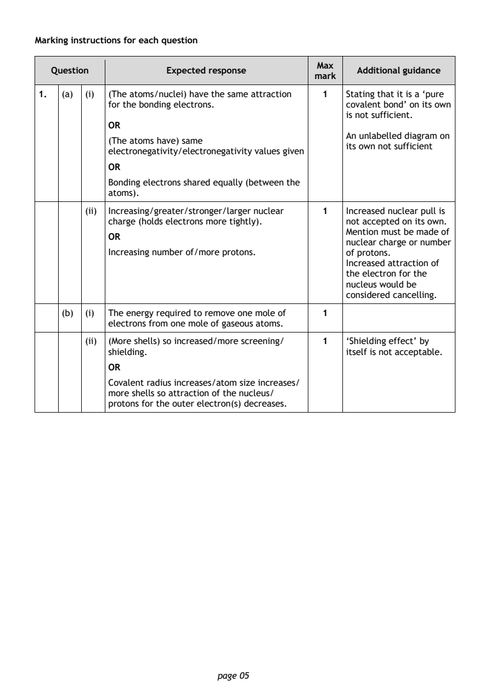
Selectable page text
Marking instructions for each question
Max
Question Expected response Additional guidance
mark
1. (a) (i) (The atoms/nuclei) have the same attraction 1 Stating that it is a ‘pure
for the bonding electrons. covalent bond’ on its own
is not sufficient.
OR
An unlabelled diagram on
(The atoms have) same
its own not sufficient
electronegativity/electronegativity values given
OR
Bonding electrons shared equally (between the
atoms).
(ii) Increasing/greater/stronger/larger nuclear 1 Increased nuclear pull is
charge (holds electrons more tightly). not accepted on its own.
Mention must be made of
OR
nuclear charge or number
Increasing number of/more protons. of protons.
Increased attraction of
the electron for the
nucleus would be
considered cancelling.
(b) (i) The energy required to remove one mole of 1
electrons from one mole of gaseous atoms.
(ii) (More shells) so increased/more screening/ 1 ‘Shielding effect’ by
shielding. itself is not acceptable.
OR
Covalent radius increases/atom size increases/
more shells so attraction of the nucleus/
protons for the outer electron(s) decreases.
page 05PDF page 6
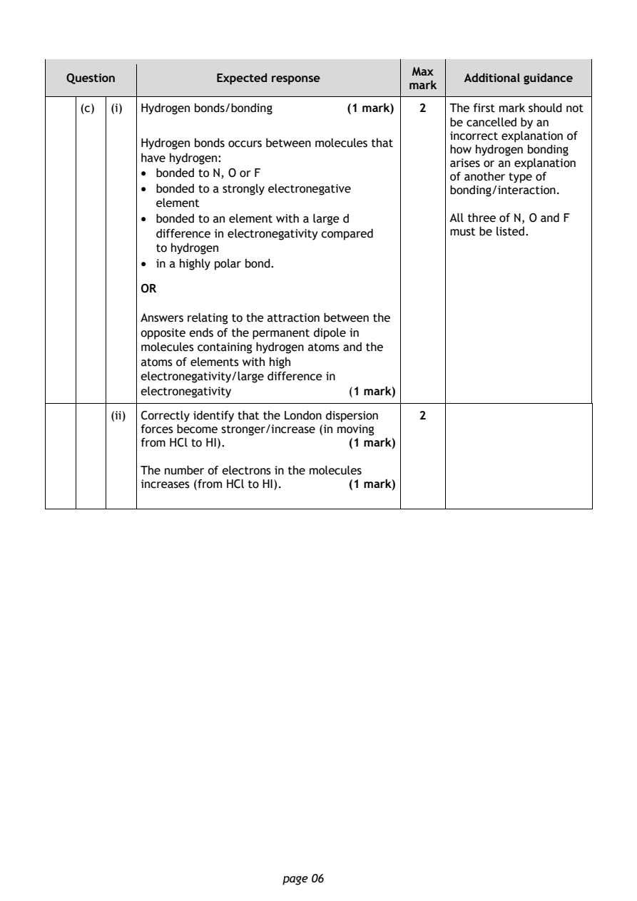
Selectable page text
Max
Question Expected response Additional guidance
mark
(c) (i) Hydrogen bonds/bonding (1 mark) 2 The first mark should not
be cancelled by an
incorrect explanation of
Hydrogen bonds occurs between molecules that
how hydrogen bonding
have hydrogen:
arises or an explanation
• bonded to N, O or F
of another type of
• bonded to a strongly electronegative bonding/interaction.
element
• bonded to an element with a large d All three of N, O and F
difference in electronegativity compared must be listed.
to hydrogen
• in a highly polar bond.
OR
Answers relating to the attraction between the
opposite ends of the permanent dipole in
molecules containing hydrogen atoms and the
atoms of elements with high
electronegativity/large difference in
electronegativity (1 mark)
(ii) Correctly identify that the London dispersion 2
forces become stronger/increase (in moving
from HCl to HI). (1 mark)
The number of electrons in the molecules
increases (from HCl to HI). (1 mark)
page 06PDF page 7
Paper 2, Question 2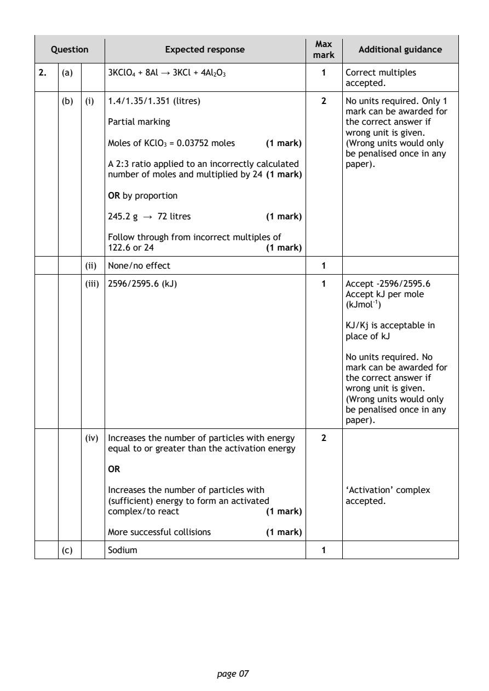
Selectable page text
Max
Question Expected response Additional guidance
mark
2. (a) 3KClO₄ + 8Al → 3KCl + 4Al₂O₃ 1 Correct multiples
accepted.
(b) (i) 1.4/1.35/1.351 (litres) 2 No units required. Only 1
mark can be awarded for
Partial marking the correct answer if
wrong unit is given.
Moles of KClO₃ = 0.03752 moles (1 mark) (Wrong units would only
be penalised once in any
A 2:3 ratio applied to an incorrectly calculated paper).
number of moles and multiplied by 24 (1 mark)
OR by proportion
245.2 g → 72 litres (1 mark)
Follow through from incorrect multiples of
122.6 or 24 (1 mark)
(ii) None/no effect 1
(iii) 2596/2595.6 (kJ) 1 Accept -2596/2595.6
Accept kJ per mole
(kJmol⁻¹)
KJ/Kj is acceptable in
place of kJ
No units required. No
mark can be awarded for
the correct answer if
wrong unit is given.
(Wrong units would only
be penalised once in any
paper).
(iv) Increases the number of particles with energy 2
equal to or greater than the activation energy
OR
Increases the number of particles with ‘Activation’ complex
(sufficient) energy to form an activated accepted.
complex/to react (1 mark)
More successful collisions (1 mark)
(c) Sodium 1
page 07PDF page 8
Paper 2, Question 3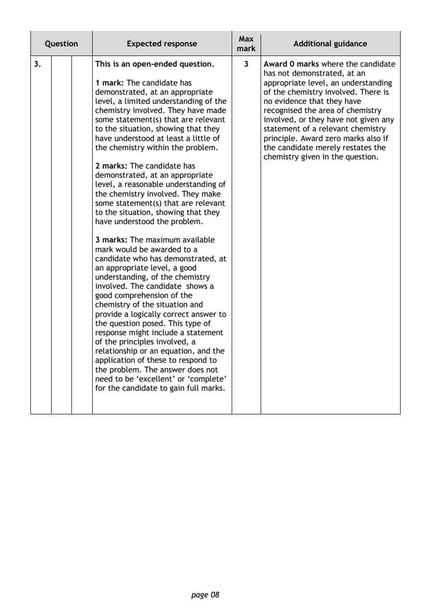
Selectable page text
Max
Question Expected response Additional guidance
mark
3. This is an open-ended question. 3 Award 0 marks where the candidate
has not demonstrated, at an
1 mark: The candidate has appropriate level, an understanding
demonstrated, at an appropriate of the chemistry involved. There is
level, a limited understanding of the no evidence that they have
chemistry involved. They have made recognised the area of chemistry
some statement(s) that are relevant involved, or they have not given any
to the situation, showing that they statement of a relevant chemistry
have understood at least a little of principle. Award zero marks also if
the chemistry within the problem. the candidate merely restates the
chemistry given in the question.
2 marks: The candidate has
demonstrated, at an appropriate
level, a reasonable understanding of
the chemistry involved. They make
some statement(s) that are relevant
to the situation, showing that they
have understood the problem.
3 marks: The maximum available
mark would be awarded to a
candidate who has demonstrated, at
an appropriate level, a good
understanding, of the chemistry
involved. The candidate shows a
good comprehension of the
chemistry of the situation and
provide a logically correct answer to
the question posed. This type of
response might include a statement
of the principles involved, a
relationship or an equation, and the
application of these to respond to
the problem. The answer does not
need to be ‘excellent’ or ‘complete’
for the candidate to gain full marks.
page 08PDF page 9
Paper 2, Question 4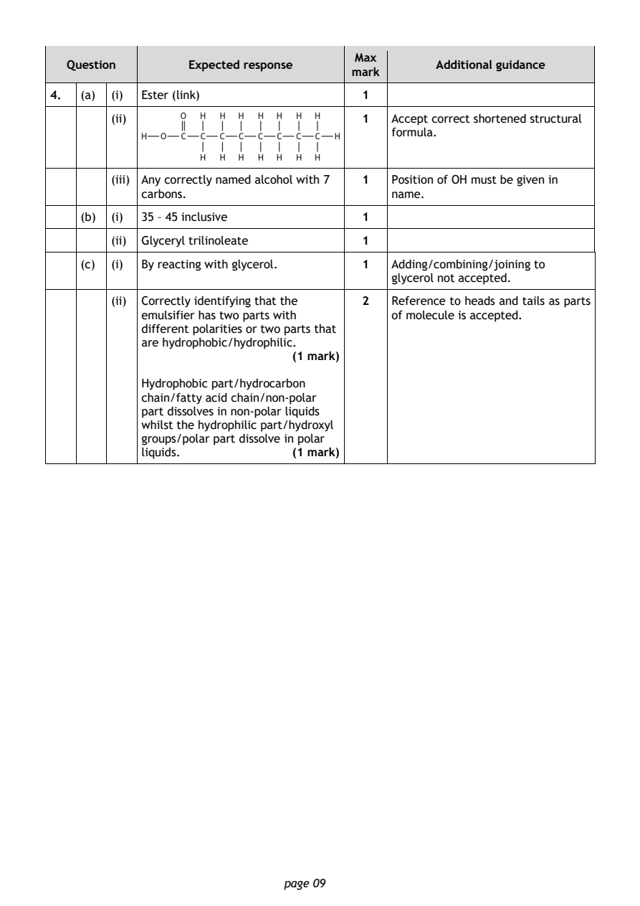
Selectable page text
Max
Question Expected response Additional guidance
mark
4. (a) (i) Ester (link) 1
(ii) 1 Accept correct shortened structural
formula.
(iii) Any correctly named alcohol with 7 1 Position of OH must be given in
carbons. name.
(b) (i) 35 – 45 inclusive 1
(ii) Glyceryl trilinoleate 1
(c) (i) By reacting with glycerol. 1 Adding/combining/joining to
glycerol not accepted.
(ii) Correctly identifying that the 2 Reference to heads and tails as parts
emulsifier has two parts with of molecule is accepted.
different polarities or two parts that
are hydrophobic/hydrophilic.
(1 mark)
Hydrophobic part/hydrocarbon
chain/fatty acid chain/non-polar
part dissolves in non-polar liquids
whilst the hydrophilic part/hydroxyl
groups/polar part dissolve in polar
liquids. (1 mark)
page 09PDF page 10
Paper 2, Question 5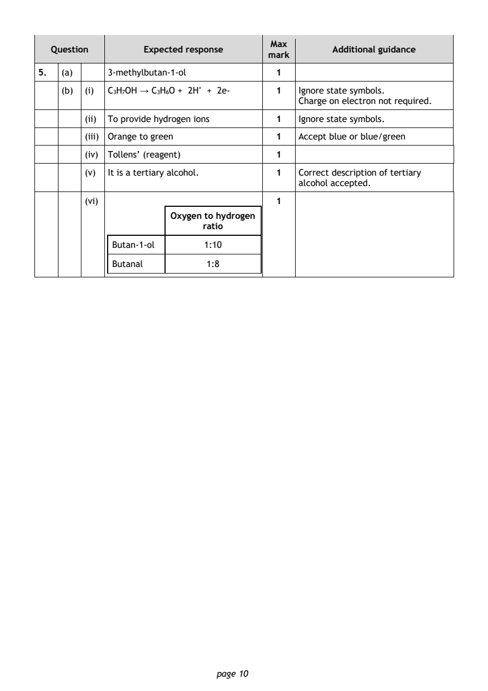
Selectable page text
Max
Question Expected response Additional guidance
mark
5. (a) 3-methylbutan-1-ol 1
(b) (i) C₃H₇OH → C₃H₆O + 2H⁺ + 2e- 1 Ignore state symbols.
Charge on electron not required.
(ii) To provide hydrogen ions 1 Ignore state symbols.
(iii) Orange to green 1 Accept blue or blue/green
(iv) Tollens’ (reagent) 1
(v) It is a tertiary alcohol. 1 Correct description of tertiary
alcohol accepted.
(vi) 1
Oxygen to hydrogen
ratio
Butan-1-ol 1:10
Butanal 1:8
page 10PDF page 11
Paper 2, Question 6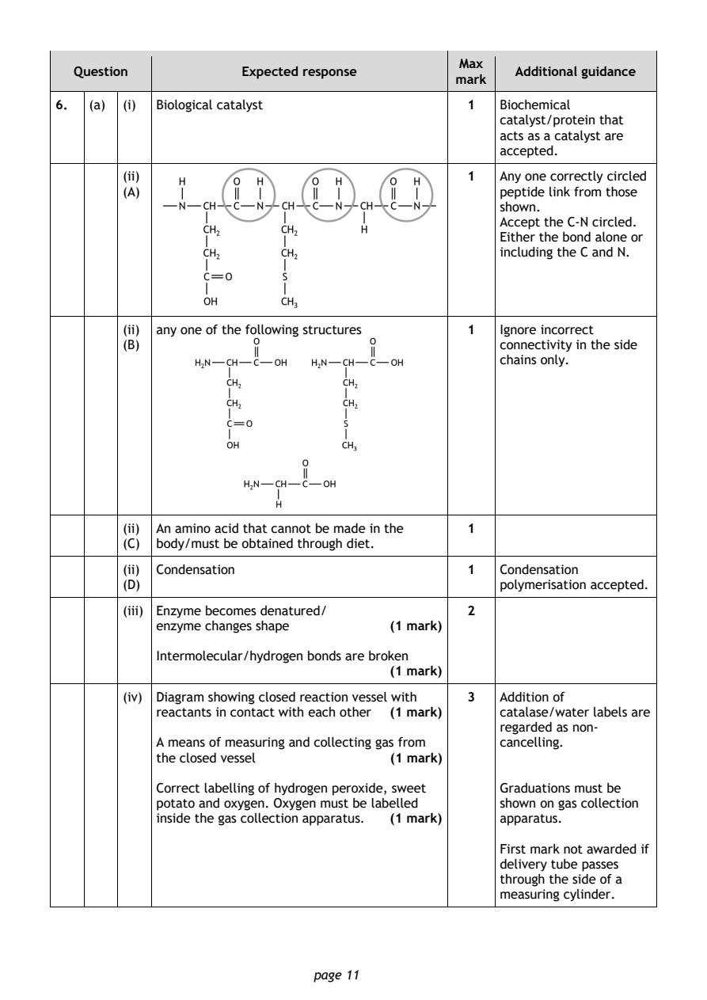
Selectable page text
Max
Question Expected response Additional guidance
mark
6. (a) (i) Biological catalyst 1 Biochemical
catalyst/protein that
acts as a catalyst are
accepted.
(ii) 1 Any one correctly circled
(A) peptide link from those
shown.
Accept the C-N circled.
Either the bond alone or
including the C and N.
(ii) any one of the following structures 1 Ignore incorrect
(B) connectivity in the side
chains only.
(ii) An amino acid that cannot be made in the 1
(C) body/must be obtained through diet.
(ii) Condensation 1 Condensation
(D) polymerisation accepted.
(iii) Enzyme becomes denatured/ 2
enzyme changes shape (1 mark)
Intermolecular/hydrogen bonds are broken
(1 mark)
(iv) Diagram showing closed reaction vessel with 3 Addition of
reactants in contact with each other (1 mark) catalase/water labels are
regarded as non-
A means of measuring and collecting gas from cancelling.
the closed vessel (1 mark)
Correct labelling of hydrogen peroxide, sweet Graduations must be
potato and oxygen. Oxygen must be labelled shown on gas collection
inside the gas collection apparatus. (1 mark) apparatus.
First mark not awarded if
delivery tube passes
through the side of a
measuring cylinder.
page 11PDF page 12
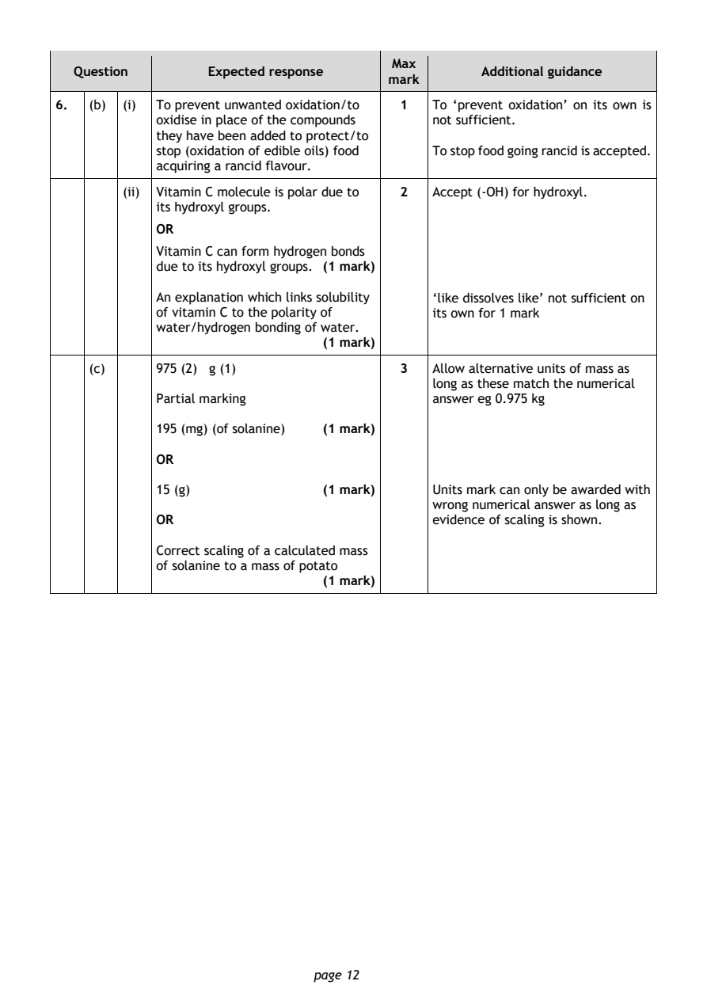
Selectable page text
Max
Question Expected response Additional guidance
mark
6. (b) (i) To prevent unwanted oxidation/to 1 To ‘prevent oxidation’ on its own is
oxidise in place of the compounds not sufficient.
they have been added to protect/to
stop (oxidation of edible oils) food To stop food going rancid is accepted.
acquiring a rancid flavour.
(ii) Vitamin C molecule is polar due to 2 Accept (-OH) for hydroxyl.
its hydroxyl groups.
OR
Vitamin C can form hydrogen bonds
due to its hydroxyl groups. (1 mark)
An explanation which links solubility ‘like dissolves like’ not sufficient on
of vitamin C to the polarity of its own for 1 mark
water/hydrogen bonding of water.
(1 mark)
(c) 975 (2) g (1) 3 Allow alternative units of mass as
long as these match the numerical
Partial marking answer eg 0.975 kg
195 (mg) (of solanine) (1 mark)
OR
15 (g) (1 mark) Units mark can only be awarded with
wrong numerical answer as long as
OR evidence of scaling is shown.
Correct scaling of a calculated mass
of solanine to a mass of potato
(1 mark)
page 12PDF page 13
Paper 2, Question 7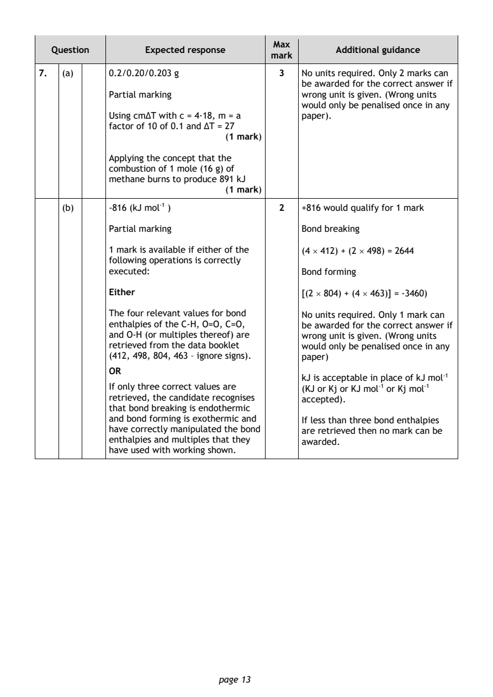
Selectable page text
Max
Question Expected response Additional guidance
mark
7. (a) 0.2/0.20/0.203 g 3 No units required. Only 2 marks can
be awarded for the correct answer if
Partial marking wrong unit is given. (Wrong units
would only be penalised once in any
Using cmΔT with c = 4·18, m = a paper).
factor of 10 of 0.1 and ΔT = 27
(1 mark)
Applying the concept that the
combustion of 1 mole (16 g) of
methane burns to produce 891 kJ
(1 mark)
(b) -816 (kJ mol⁻¹ ) 2 +816 would qualify for 1 mark
Partial marking Bond breaking
1 mark is available if either of the (4 × 412) + (2 × 498) = 2644
following operations is correctly
executed: Bond forming
Either [(2 × 804) + (4 × 463)] = -3460)
The four relevant values for bond No units required. Only 1 mark can
enthalpies of the C-H, O=O, C=O, be awarded for the correct answer if
and O-H (or multiples thereof) are wrong unit is given. (Wrong units
retrieved from the data booklet would only be penalised once in any
(412, 498, 804, 463 – ignore signs). paper)
OR
kJ is acceptable in place of kJ mol⁻¹
If only three correct values are (KJ or Kj or KJ mol⁻¹ or Kj mol⁻¹
retrieved, the candidate recognises accepted).
that bond breaking is endothermic
and bond forming is exothermic and If less than three bond enthalpies
have correctly manipulated the bond are retrieved then no mark can be
enthalpies and multiples that they awarded.
have used with working shown.
page 13PDF page 14
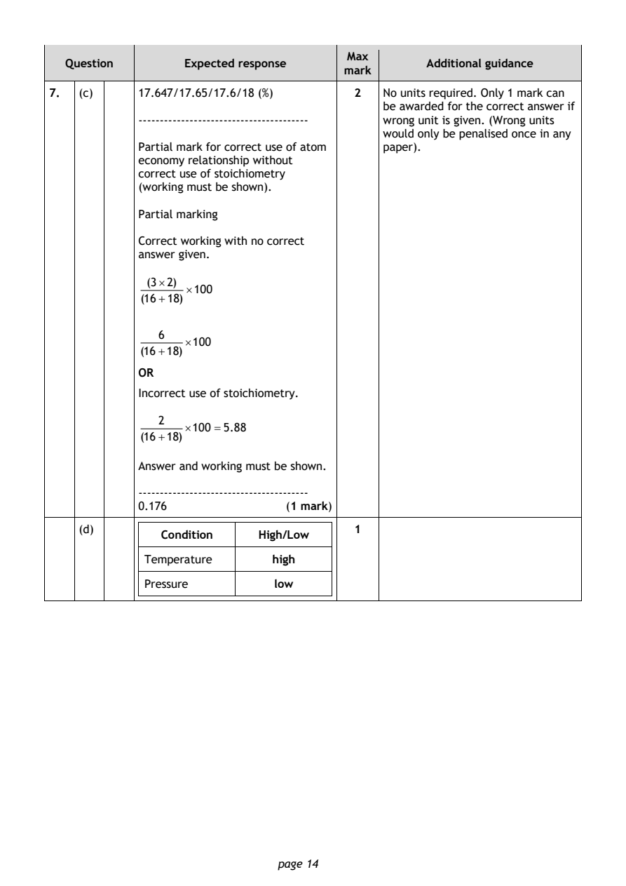
Selectable page text
Max
Question Expected response Additional guidance
mark
7. (c) 17.647/17.65/17.6/18 (%) 2 No units required. Only 1 mark can
be awarded for the correct answer if
---------------------------------------- wrong unit is given. (Wrong units
would only be penalised once in any
Partial mark for correct use of atom paper).
economy relationship without
correct use of stoichiometry
(working must be shown).
Partial marking
Correct working with no correct
answer given.
(3×2)
×100
(16+18)
6
×100
(16+18)
OR
Incorrect use of stoichiometry.
2
×100 =5.88
(16+18)
Answer and working must be shown.
----------------------------------------
0.176 (1 mark)
(d) 1
Condition High/Low
Temperature high
Pressure low
page 14PDF page 15
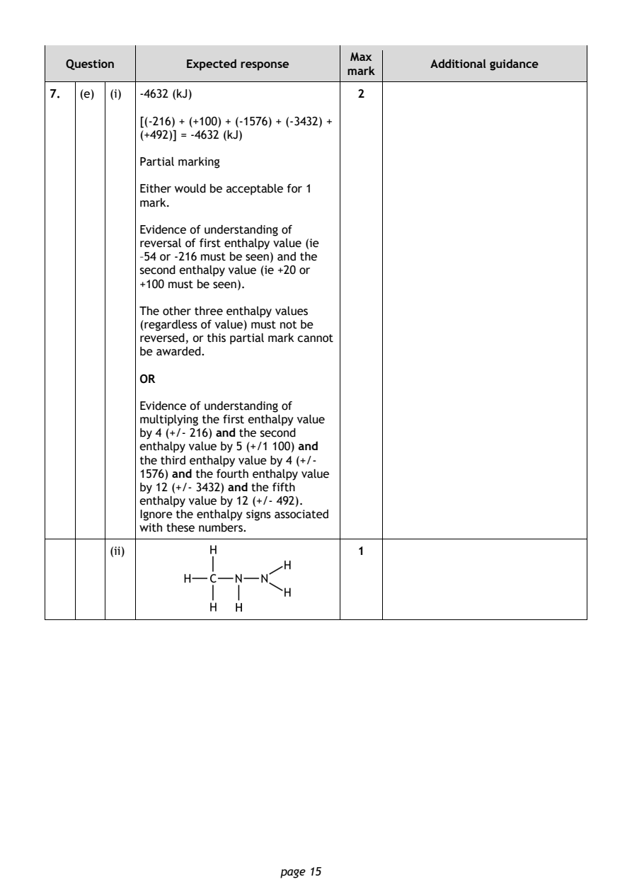
Selectable page text
Max
Question Expected response Additional guidance
mark
7. (e) (i) -4632 (kJ) 2
[(-216) + (+100) + (-1576) + (-3432) +
(+492)] = -4632 (kJ)
Partial marking
Either would be acceptable for 1
mark.
Evidence of understanding of
reversal of first enthalpy value (ie
–54 or -216 must be seen) and the
second enthalpy value (ie +20 or
+100 must be seen).
The other three enthalpy values
(regardless of value) must not be
reversed, or this partial mark cannot
be awarded.
OR
Evidence of understanding of
multiplying the first enthalpy value
by 4 (+/- 216) and the second
enthalpy value by 5 (+/1 100) and
the third enthalpy value by 4 (+/-
1576) and the fourth enthalpy value
by 12 (+/- 3432) and the fifth
enthalpy value by 12 (+/- 492).
Ignore the enthalpy signs associated
with these numbers.
(ii) 1
page 15PDF page 16
Paper 2, Question 8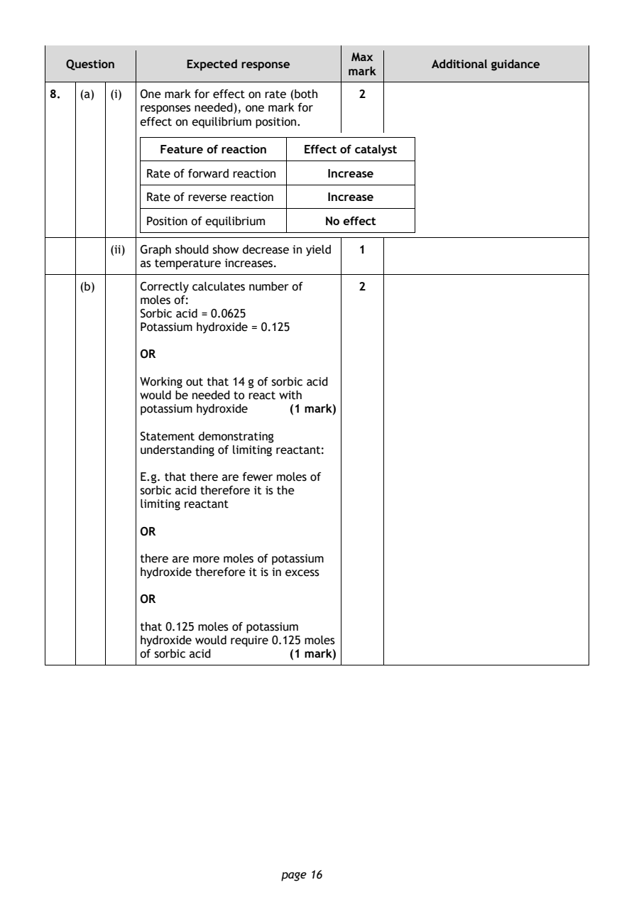
Selectable page text
Max
Question Expected response Additional guidance
mark
8. (a) (i) One mark for effect on rate (both 2
responses needed), one mark for
effect on equilibrium position.
Feature of reaction Effect of catalyst
Rate of forward reaction Increase
Rate of reverse reaction Increase
Position of equilibrium No effect
(ii) Graph should show decrease in yield 1
as temperature increases.
(b) Correctly calculates number of 2
moles of:
Sorbic acid = 0.0625
Potassium hydroxide = 0.125
OR
Working out that 14 g of sorbic acid
would be needed to react with
potassium hydroxide (1 mark)
Statement demonstrating
understanding of limiting reactant:
E.g. that there are fewer moles of
sorbic acid therefore it is the
limiting reactant
OR
there are more moles of potassium
hydroxide therefore it is in excess
OR
that 0.125 moles of potassium
hydroxide would require 0.125 moles
of sorbic acid (1 mark)
page 16PDF page 17
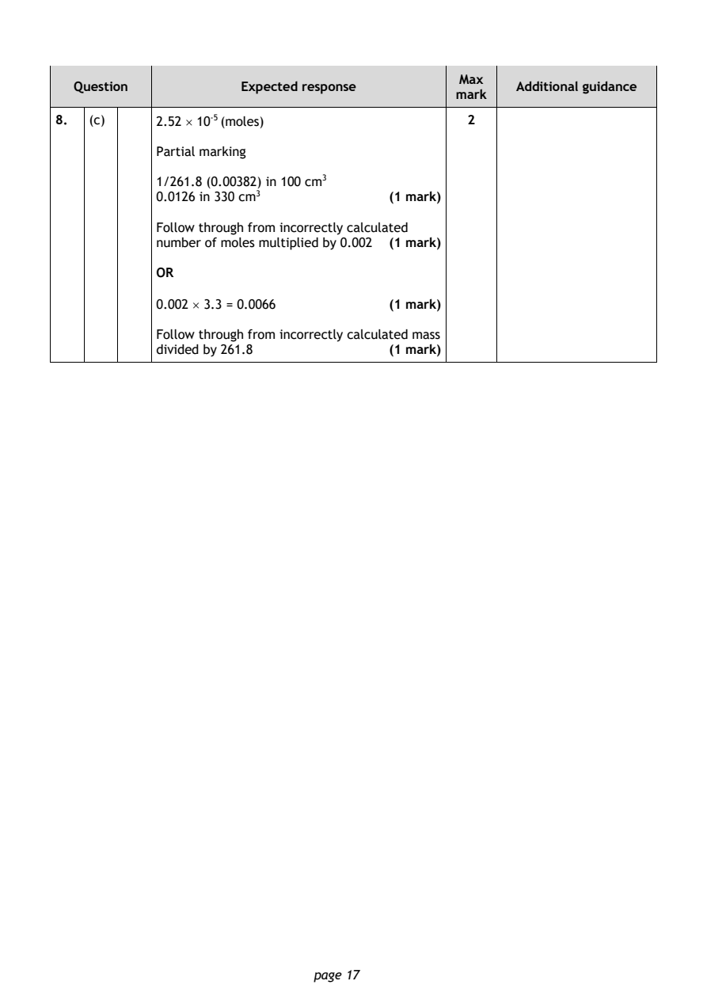
Selectable page text
Max
Question Expected response Additional guidance
mark
8. (c) 2.52 × 10⁻⁵ (moles) 2
Partial marking
1/261.8 (0.00382) in 100 cm³
0.0126 in 330 cm³ (1 mark)
Follow through from incorrectly calculated
number of moles multiplied by 0.002 (1 mark)
OR
0.002 × 3.3 = 0.0066 (1 mark)
Follow through from incorrectly calculated mass
divided by 261.8 (1 mark)
page 17PDF page 18
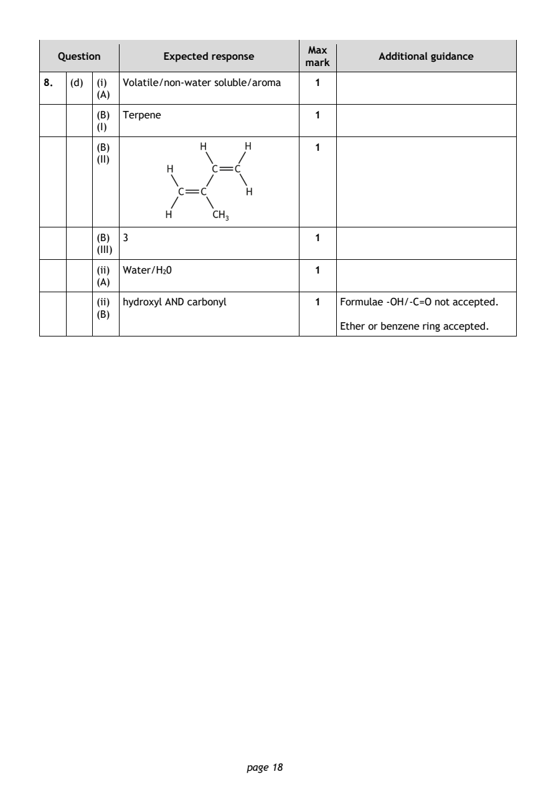
Selectable page text
Max
Question Expected response Additional guidance
mark
8. (d) (i) Volatile/non-water soluble/aroma 1
(A)
(B) Terpene 1
(I)
(B) 1
(II)
(B) 3 1
(III)
(ii) Water/H₂0 1
(A)
(ii) hydroxyl AND carbonyl 1 Formulae -OH/-C=O not accepted.
(B)
Ether or benzene ring accepted.
page 18PDF page 19
Paper 2, Question 9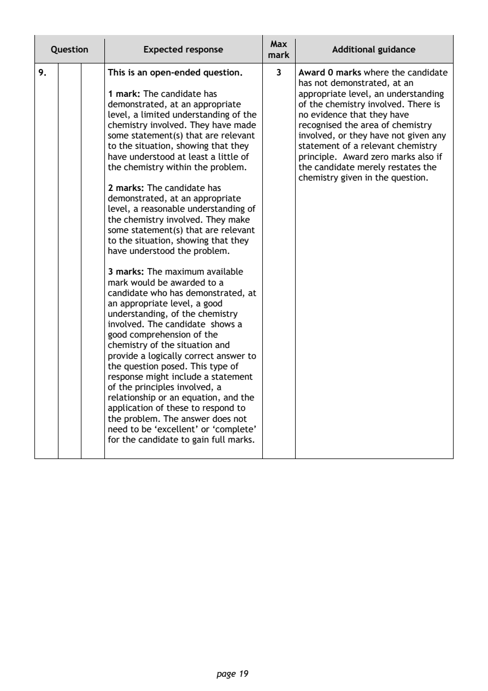
Selectable page text
Max
Question Expected response Additional guidance
mark
9. This is an open-ended question. 3 Award 0 marks where the candidate
has not demonstrated, at an
1 mark: The candidate has appropriate level, an understanding
demonstrated, at an appropriate of the chemistry involved. There is
level, a limited understanding of the no evidence that they have
chemistry involved. They have made recognised the area of chemistry
some statement(s) that are relevant involved, or they have not given any
to the situation, showing that they statement of a relevant chemistry
have understood at least a little of principle. Award zero marks also if
the chemistry within the problem. the candidate merely restates the
chemistry given in the question.
2 marks: The candidate has
demonstrated, at an appropriate
level, a reasonable understanding of
the chemistry involved. They make
some statement(s) that are relevant
to the situation, showing that they
have understood the problem.
3 marks: The maximum available
mark would be awarded to a
candidate who has demonstrated, at
an appropriate level, a good
understanding, of the chemistry
involved. The candidate shows a
good comprehension of the
chemistry of the situation and
provide a logically correct answer to
the question posed. This type of
response might include a statement
of the principles involved, a
relationship or an equation, and the
application of these to respond to
the problem. The answer does not
need to be ‘excellent’ or ‘complete’
for the candidate to gain full marks.
page 19PDF page 20
Paper 2, Question 10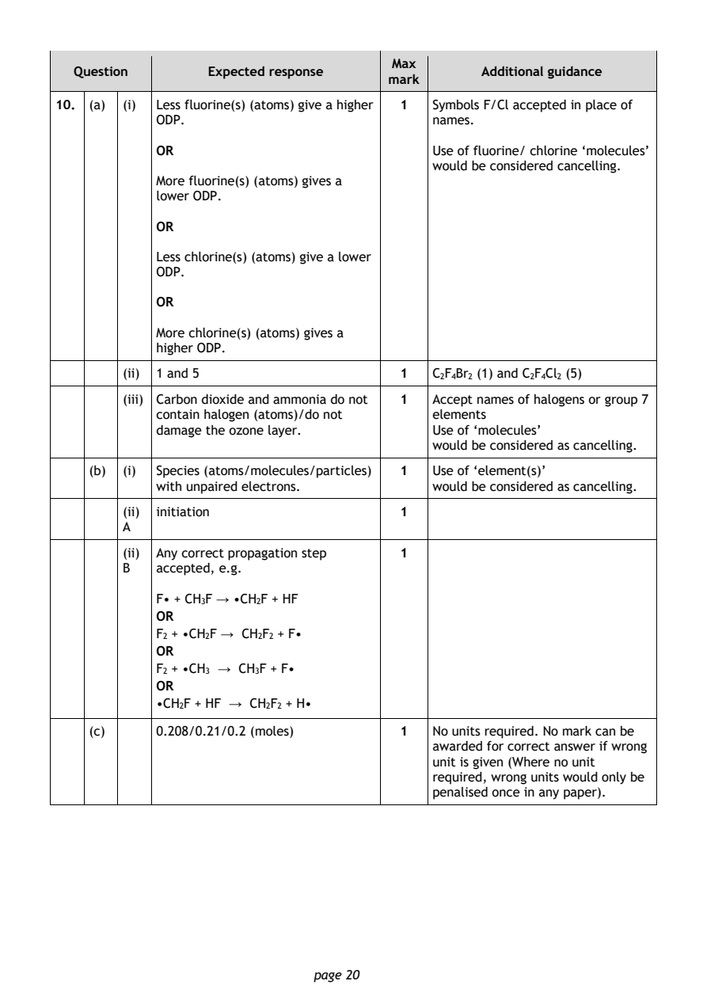
Selectable page text
Max
Question Expected response Additional guidance
mark
10. (a) (i) Less fluorine(s) (atoms) give a higher 1 Symbols F/Cl accepted in place of
ODP. names.
OR Use of fluorine/ chlorine ‘molecules’
would be considered cancelling.
More fluorine(s) (atoms) gives a
lower ODP.
OR
Less chlorine(s) (atoms) give a lower
ODP.
OR
More chlorine(s) (atoms) gives a
higher ODP.
(ii) 1 and 5 1 C₂F₄Br₂ (1) and C₂F₄Cl₂ (5)
(iii) Carbon dioxide and ammonia do not 1 Accept names of halogens or group 7
contain halogen (atoms)/do not elements
damage the ozone layer. Use of ‘molecules’
would be considered as cancelling.
(b) (i) Species (atoms/molecules/particles) 1 Use of ‘element(s)’
with unpaired electrons. would be considered as cancelling.
(ii) initiation 1
A
(ii) Any correct propagation step 1
B accepted, e.g.
F• + CH₃F → •CH₂F + HF
OR
F₂ + •CH₂F → CH₂F₂ + F•
OR
F₂ + •CH₃ → CH₃F + F•
OR
•CH₂F + HF → CH₂F₂ + H•
(c) 0.208/0.21/0.2 (moles) 1 No units required. No mark can be
awarded for correct answer if wrong
unit is given (Where no unit
required, wrong units would only be
penalised once in any paper).
page 20PDF page 21
Paper 2, Question 11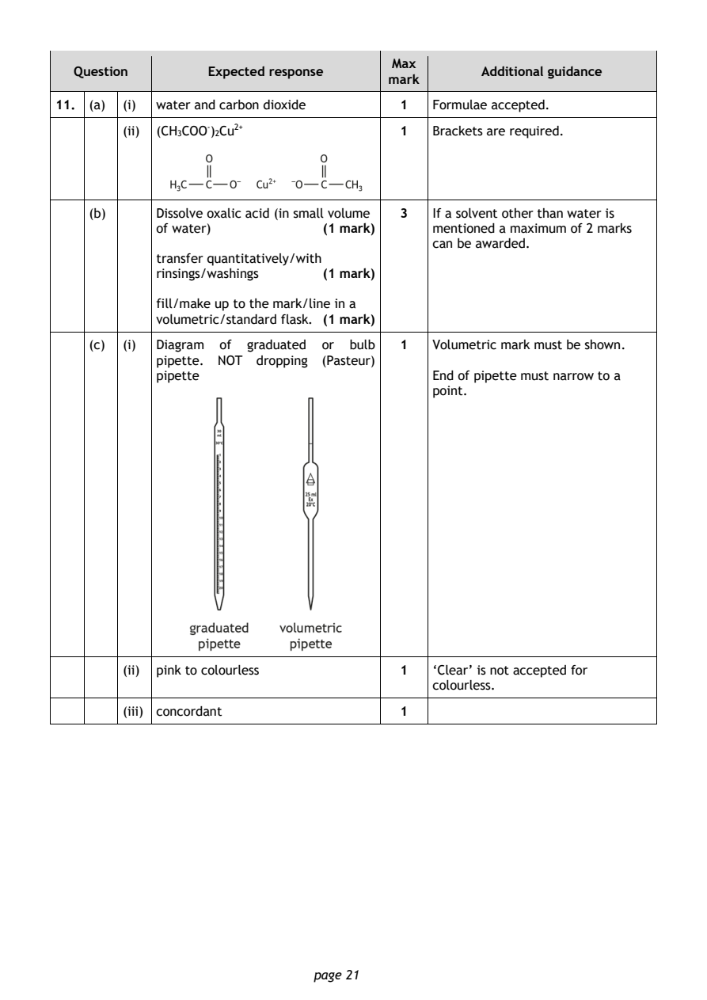
Selectable page text
Max
Question Expected response Additional guidance
mark
11. (a) (i) water and carbon dioxide 1 Formulae accepted.
(ii) (CH₃COO⁻) Cu²⁺ 1 Brackets are required.
2
(b) Dissolve oxalic acid (in small volume 3 If a solvent other than water is
of water) (1 mark) mentioned a maximum of 2 marks
can be awarded.
transfer quantitatively/with
rinsings/washings (1 mark)
fill/make up to the mark/line in a
volumetric/standard flask. (1 mark)
(c) (i) Diagram of graduated or bulb 1 Volumetric mark must be shown.
pipette. NOT dropping (Pasteur)
pipette End of pipette must narrow to a
point.
(ii) pink to colourless 1 ‘Clear’ is not accepted for
colourless.
(iii) concordant 1
page 21PDF page 22
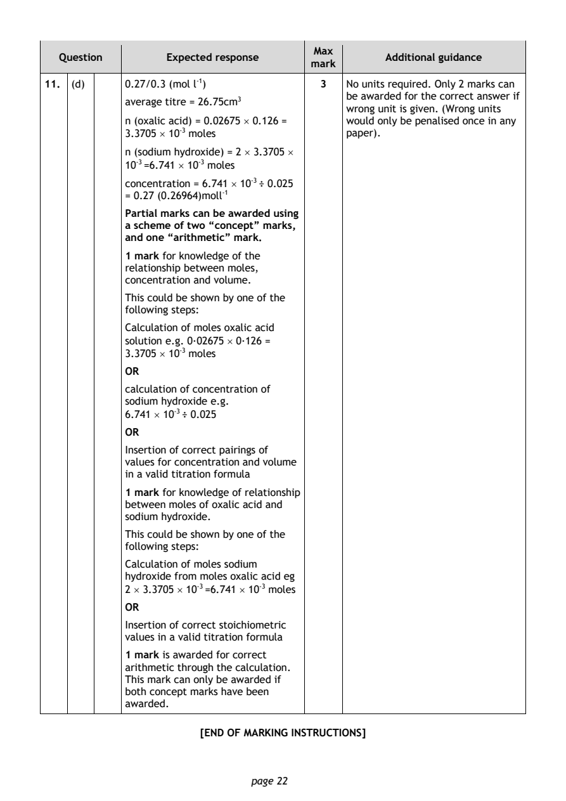
Selectable page text
Max
Question Expected response Additional guidance
mark
11. (d) 0.27/0.3 (mol l⁻¹) 3 No units required. Only 2 marks can
be awarded for the correct answer if
average titre = 26.75cm³
wrong unit is given. (Wrong units
n (oxalic acid) = 0.02675 × 0.126 = would only be penalised once in any
3.3705 × 10⁻³ moles paper).
n (sodium hydroxide) = 2 × 3.3705 ×
10⁻³ =6.741 × 10⁻³ moles
concentration = 6.741 × 10⁻³ ÷ 0.025
= 0.27 (0.26964)moll⁻¹
Partial marks can be awarded using
a scheme of two “concept” marks,
and one “arithmetic” mark.
1 mark for knowledge of the
relationship between moles,
concentration and volume.
This could be shown by one of the
following steps:
Calculation of moles oxalic acid
solution e.g. 0·02675 × 0·126 =
3.3705 × 10⁻³ moles
OR
calculation of concentration of
sodium hydroxide e.g.
6.741 × 10⁻³ ÷ 0.025
OR
Insertion of correct pairings of
values for concentration and volume
in a valid titration formula
1 mark for knowledge of relationship
between moles of oxalic acid and
sodium hydroxide.
This could be shown by one of the
following steps:
Calculation of moles sodium
hydroxide from moles oxalic acid eg
2 × 3.3705 × 10⁻³ =6.741 × 10⁻³ moles
OR
Insertion of correct stoichiometric
values in a valid titration formula
1 mark is awarded for correct
arithmetic through the calculation.
This mark can only be awarded if
both concept marks have been
awarded.
[END OF MARKING INSTRUCTIONS]
page 22